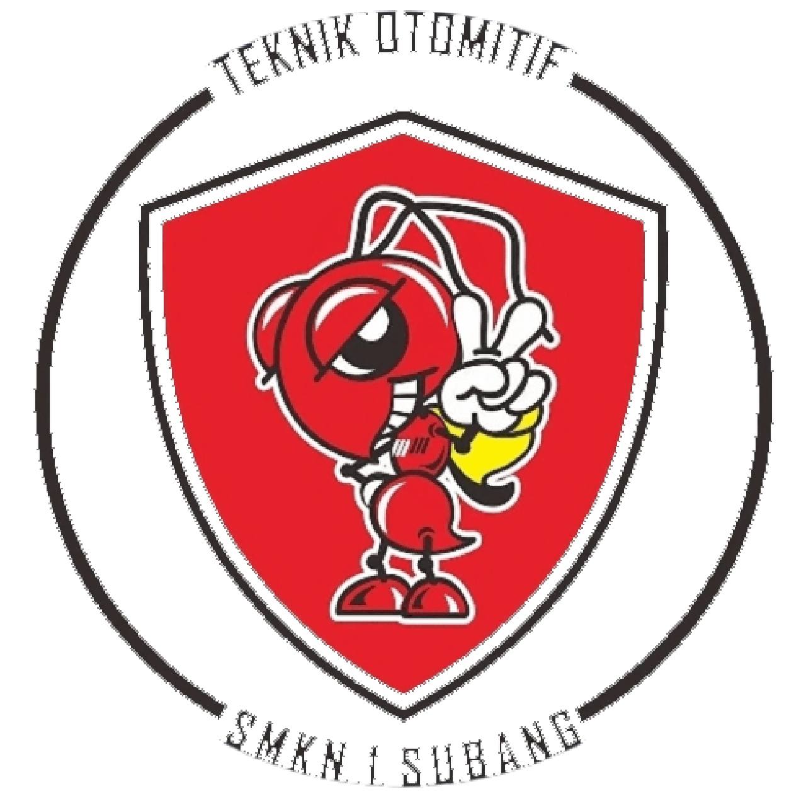
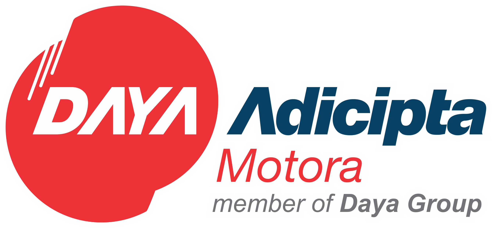
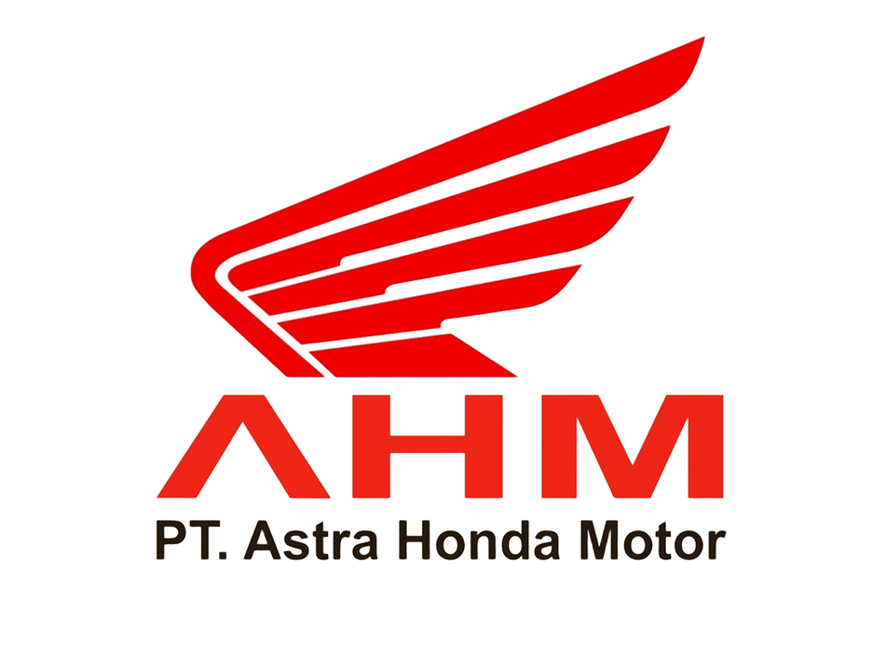

Teknik Otomotif dan Sepeda Motor
Deskripsi
TOSM adalah salah satu jurusan di program keahlian Teknik Otomotif yang berkecimpung dalam kendaraan roda dua/R2 (sepeda motor), dimana siswa di bekali dengan keterampilan, pengetahuan dan sikap sebagai mekanik level dasar yang kompeten, dan disiapkan untuk bekerja di bengkel resmi sepeda motor ataupun di bengkel-bengkel sepeda motor secara umum. hingga mempersiapkan siswa untuk menjadi wirausahawan di bidang perbengkelan sepeda motor.
Kompetensi Dasar
- Perawatan berkala Sepeda Motor
- Perawatan dan Perbaikan Engine Sepeda Motor
- Perawatan dan Perbaikan Sasis Sepeda Motor
- Perawatan dan Perbaikan Kelistrikan Sepeda Motor
- Produk Kreatif dan Kewirausahaan
- Perawatan Bengkel Sepeda Motor
Tujuan Pembelajaran
Tujuan Program Keahlian Teknik Otomotif secara umum mengacu pada isi Undang Undang Sistem Pendidikan Nasional (UU SPN) pasal 3 mengenai Tujuan Pendidikan Nasional dan penjelasan pasal 15 yang menyebutkan bahwa pendidikan kejuruan merupakan pendidikan menengah yang mempersiapkan peserta didik terutama untuk bekerja dalam bidang tertentu. Secara khusus tujuan Program Keahlian Teknik Otomotif adalah membekali peserta didik dengan keterampilan, pengetahuan dan sikap agar kompeten
Tenaga Pengajar Produktif
- Wahyu Mulyadi, S.T.
- Firmansyah, S.T.
- Ahmad Ruhyanto, S.Pd.
- Eko Agusprasetyo, S.Pd
- M.Sulaeman
- Guntur Widianto, S.T.
- Asep Rohendi, S.Pd
- Ari Wahyu Dani, S.T.
Institusi Pasangan
|  |  |